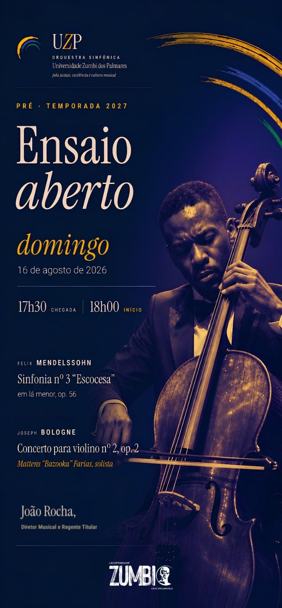
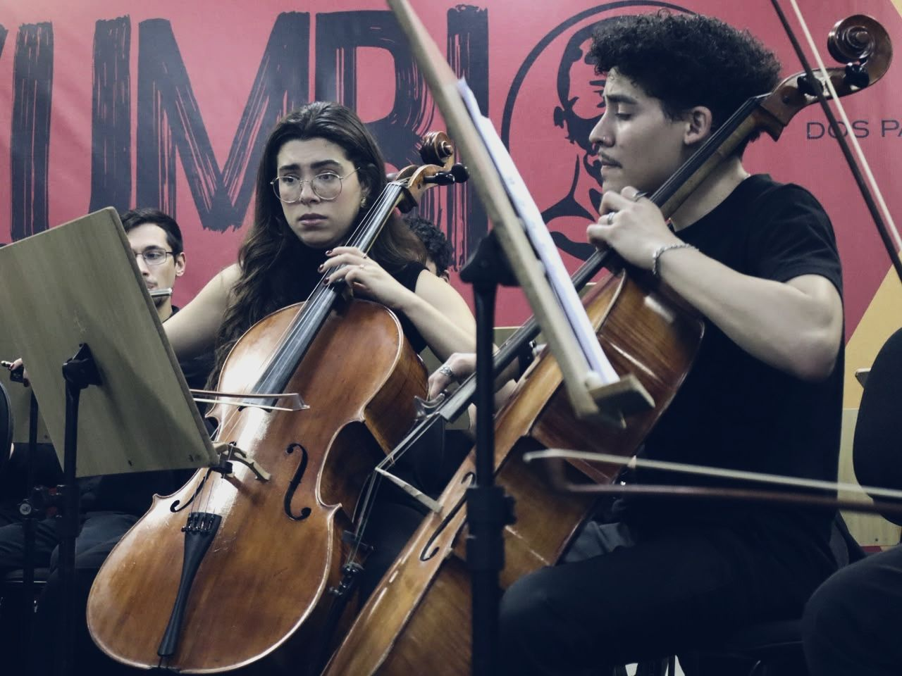
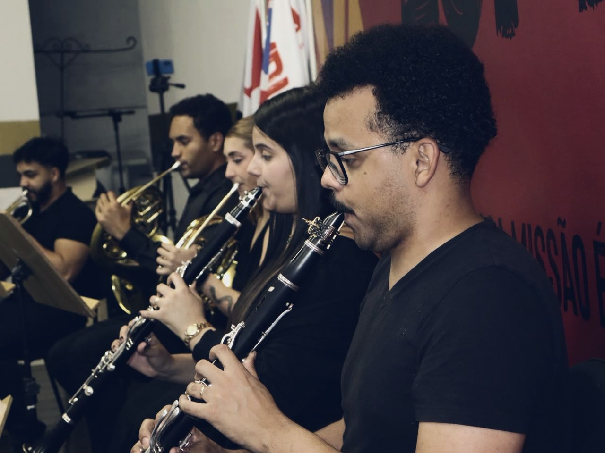
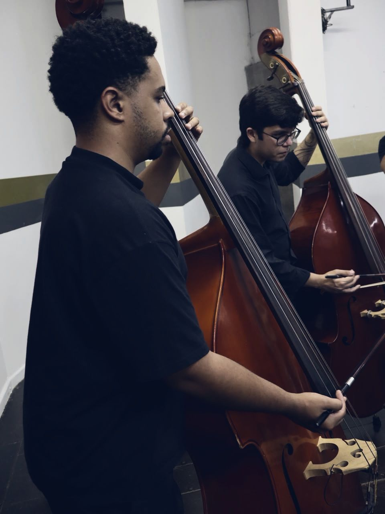

16 · 08domingo · 2026
Ensaio Aberto nº 1
Mendelssohn · Sinfonia nº 3, "Escocesa"
Bologne · Concerto para violino nº 2
Matteus "Bazooka" Farias, solista

pela justiça, excelência e cultura musical
Próxima apresentação 20 de novembro de 2026 Troféu Raça Negra · Espaço UnimedAgenda · novembro de 2026
A Orquestra sobe ao palco do Troféu Raça Negra 2026, realização da Universidade Zumbi dos Palmares que há mais de vinte anos reconhece trajetórias que transformam o país.
Trajetória
Formada por instrumentistas em atividade na cena sinfônica de São Paulo, a Orquestra se apresentou em dois ensaios abertos à comunidade da Universidade antes de chegar ao Troféu.
16 · 08domingo · 2026
Mendelssohn · Sinfonia nº 3, "Escocesa"
Bologne · Concerto para violino nº 2
Matteus "Bazooka" Farias, solista

25 · 09sexta-feira · 2026
Mendelssohn · As Hébridas, op. 26
36 instrumentistas no palco



20 · 11sexta-feira · 2026
A primeira apresentação pública
Espaço Unimed · São Paulo
Direção artística
maestro titular e diretor artístico
Maestro e compositor formado no Brasil, na Alemanha, como bolsista do DAAD, e nos Estados Unidos. Regeu a Orquestra Sinfônica de Porto Alegre, a Sinfônica da Bahia, a do Espírito Santo, a de Sorocaba, a Sinfônica e a de Câmara da Universidade de São Paulo e a Camerata Antiqua de Curitiba.
Compositor de O Almirante Negro, ópera em quatro atos com libreto de Dione Carlos, encomendada pelo Theatro Municipal de São Paulo. Criador e apresentador do Brasil Afro-Sinfônico, na Rádio Cultura FM, e vencedor do Prêmio Santos Arte Preta.
Doutorando em regência orquestral pela University of Kentucky, mestre pelo College-Conservatory of Music de Cincinnati e bacharel pela Unicamp. Estudos com Marin Alsop, Isaac Karabtchevsky e Fábio Mechetti.
Realização
Primeira instituição de ensino superior negra da América Latina. Reitoria: Dr. José Vicente.
Para os instrumentistas convocados
Cadastro, disponibilidade e termo do Troféu Raça Negra 2026, tudo em poucos minutos.
Entrar